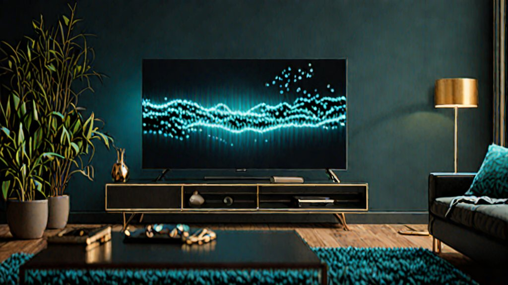
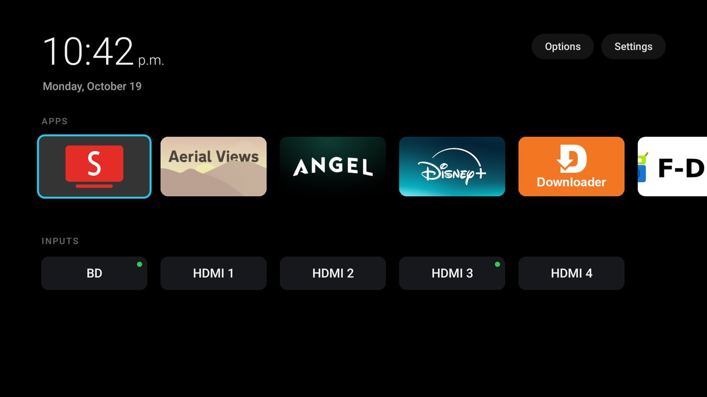
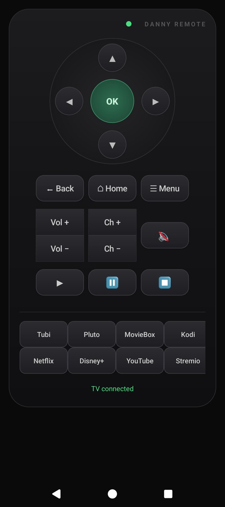

I Debloated My Fire TV, Killed the Tracking, and Built My Own Remote
2026-10-19 · sovereign tech · build log

So here's the thing about a Fire TV. On the surface it's a perfectly fine little media box. You plug it in, you watch your shows, done. But underneath that friendly little interface is a machine that phones home to Amazon roughly every time you blink. It tracks what you watch, what you search, how long you hover over a thumbnail, and it pushes updates whether you want them or not. It stuffs the home screen with sponsored tiles. It wants your account. It wants to know you.
I don't want to know me. I want to watch my stuff.
So I did what I do: I took it apart, removed the parts I didn't want, and rebuilt it into something that actually answers to me. And because I couldn't leave well enough alone, I went and built my own remote for it too — a web one, then a real app, then a launcher widget. This is the whole journey, start to finish, with the actual commands and the actual gotchas. No theory. All of it fought for in the disco hut.
If you've never touched a "repo" in your life, don't worry — I'll explain it in plain English before we get going. By the end you'll have a clean, private media box and a remote that runs off your own phone.
First: what even is a "repo"?
If the words "GitHub" and "repository" make your eyes glaze over, here's the sixty-second version.
A repo (short for "repository") is just a folder of code that someone has shared online, at a site called GitHub. Think of it as a public recipe box. A developer builds a tool, writes down exactly how it works, and posts the whole folder to GitHub so anyone can grab a copy and use it.
When people say "clone the repo," they mean "make a local copy of that folder on my computer." That's it. You're not hacking into anything. You're downloading a folder.
You have two ways to get one:
- The easy way (no setup): Go to the project's GitHub page in your browser, click the green Code button, and hit Download ZIP. Unzip it. You've got the repo. Done.
- The "I have git" way: Open a terminal and type
git clone https://github.com/username/project. It downloads the folder and keeps it in sync if the author updates it.
That's the whole concept. A repo is a shared folder of code. We're going to grab one, point it at your TV, and let it do its thing.
The tool: dumbtv
The project we're using is called dumbtv. It's open source (MIT licensed), and it does exactly what the name promises: it makes your smart TV dumb in the best possible way. Dumb as in "it stops ringing up Amazon."
Here's what it does in one pass:
- Disables the tracking packages. Dozens of Amazon background services that exist purely to collect data and push ads get switched off.
- Applies privacy settings. Turns off the stuff Amazon turns on by default that you'd never think to check.
- Installs a DNS filter. This is the big one — a little always-on VPN that blocks the TV's attempts to reach Amazon's tracking and update servers at the network level. Even if a package tries to phone home, the request just... dies.
- Swaps the launcher. Replaces Amazon's cluttered home screen with a clean, minimal one that just shows your apps.
It's reversible the whole way through (there's a restore script), so you're not bricking anything. You can always put it back.
The repo even has a catalog of tested firmware versions, and it called out my exact TV model and Fire OS version as a known-good match. That's the kind of thing that makes me trust a project before I've run a single line.
Step 1 — wake the TV up (the part that's the same on every platform)
Before your computer can talk to the TV, the TV has to let it in. On a Fire TV that means turning on ADB (Android Debug Bridge). Don't let the name scare you — ADB is just a standard way for a computer to talk to an Android device, and a Fire TV is an Android device under the hood. ADB is like a remote control, file manager, and terminal rolled into one.
On the TV:
- Go to Settings → My Fire TV → Developer Options. (If you don't see Developer Options, go to About and tap the version number seven times until it unlocks.)
- Turn on ADB (sometimes labeled "ADB over network" or "Developer options" → "ADB").
- While you're there, note the TV's IP address — it's on the About or Network screen. Mine was a
192.168.x.xaddress. Write it down; you'll need it in a second.
That's it for the TV. It's now listening for a friend on the network.
Step 2 — connect from your computer
This is where the three platforms split. The end goal is the same everywhere: get a little program called adb onto your computer, then tell it to connect to the TV's IP. The only difference is how you install adb.
On Windows
- Download Android platform-tools from Google's developer site (search "android platform tools windows" — it's a small zip from
developer.android.com). - Unzip it somewhere permanent, like
C:\adb. - Open PowerShell (or Command Prompt) and cd into that folder.
- You now have
adb.exe. Run:
adb connect <LAN_IP>:5555
Replace <LAN_IP> with your TV's IP address. You should see "connected to
Windows gotcha: Windows loves to pop up a "Do you want to allow this app to communicate through the firewall?" box the first time. Say Yes / Allow. If you don't, the connection will silently fail and you'll pull your hair out.
On Apple (macOS)
- Install Homebrew if you don't have it (it's the standard macOS package manager — one command from their website).
- In Terminal, run:
brew install android-platform-tools
- That drops
adbonto your PATH. Connect:
adb connect <LAN_IP>:5555
macOS is the smoothest of the three for this. No firewall drama, no path fiddling.
On Linux (and yes, that includes Omarchy)
- Install the platform-tools package. On a Debian/Ubuntu-based system (which Omarchy is built on):
sudo apt install android-tools-adb
Or, if you'd rather not use the distro package, grab the same zip as Windows and drop it in ~/bin/platform-tools.
- Connect:
adb connect <LAN_IP>:5555
On my Omarchy box I kept the platform-tools in ~/bin/platform-tools and called it directly. Works the same.
Whichever platform you're on, once you run adb connect <LAN_IP>:5555 and see "connected," your computer and the TV are talking. You can verify with adb devices — your TV's IP should be listed.
Step 3 — run the debloat
Now the fun part. From the folder where you unzipped (or cloned) dumbtv:
./scripts/configure.sh -y
./scripts/all.sh -y
That's basically it. configure.sh sets up your preferences (I kept Prime Video's CDN, turned the launcher on, turned the DNS filter on, left YouTube alone). all.sh does the whole pass — disables the tracking packages, applies the privacy settings, starves the update services, and sets up the DNS filter.
It takes a couple of minutes. When it's done, the TV reboots, and when it comes back... it's quiet. No sponsored tiles. No "Amazon wants to improve your experience" popups. Just your apps on a clean little home screen.

That's the home screen after. A clock, your apps in a row, and your HDMI inputs. That's it. Compare that to the default Fire TV home, which is a billboard.
The gotcha: the VPN that wouldn't bind
Here's where I lost an hour, so you don't have to.
The DNS filter works by running a little always-on VPN on the TV that intercepts the TV's network traffic and blocks the bad destinations. After the reboot, dumbtv's self-test said the VPN hadn't bound — the filter wasn't actually active. The blocks weren't happening.
The fix was two commands and one button press on the TV:
adb shell appops set dnsfilter.android ACTIVATE_VPN allow
adb shell settings put secure always_on_vpn_app dnsfilter.android
adb shell settings put secure always_on_vpn_enabled 1
Then I hit the Connect button that popped up on the TV's screen. After that, I verified the blocks were real — the TV's attempts to reach Amazon's update and telemetry servers were all being redirected to nowhere. YouTube still worked fine. The filter was only eating the stuff I wanted it to eat.
The always_on_vpn setting is the important one — it makes the filter survive reboots, so you don't have to redo this every time the TV restarts.
Adding back what you actually want
Debloating isn't about ending up with an empty box. It's about ending up with a box that has your stuff and none of theirs. So I added back the apps I actually use:
- SmartTube — a clean, open-source YouTube client. No ads, no tracking, plays in 4K. (I set it to 2160p 60fps since the TV is a 4K panel.)
- LocalSend — open-source, local file sharing. Send a video off your phone to the TV over the LAN, no cloud involved.
- F-Droid — the open-source app store, so I can grab more clean apps without touching Amazon's store.
- Aerial Views — a screensaver that shows gorgeous aerial footage. Set it as the TV's screensaver.
- Stremio — for the addon-based streaming (more on that later).
- Kodi — the classic media center, for my local library.
The whole point: I chose every single thing on that home screen. Nothing got there because Amazon decided I should see it.
The remote (where it got fun)
Now the TV was clean and private, but I still had the little plastic Amazon remote, and I wasn't happy about it. It's a tracking device. It has a button that rings up Amazon's voice service. I'd rather not.
So I asked the obvious question: now that I can reach the TV over the network, is there an open-source remote I can run on my phone?
There was — a project that installs a tiny app on the TV that runs a local web server, and you point your phone's browser at it. I installed it. It looked perfect. And it... didn't work. The TV's ADB wouldn't let the little app connect to itself (a quirk of how Fire OS handles local connections). Dead end.
So I did what I always do: I built the thing I wanted.
I wrote a tiny web server that runs on my always-on computer (the one that runs my AI stack). It sits on a local port, and it talks to the TV over the ADB connection I'd already set up. Your phone's browser points at that server, and every button you tap gets forwarded to the TV. No cloud. No account. No phone-home. Just your phone, your computer, and your TV on your own network.
The first version was a plain web page — a D-pad, some buttons, app shortcuts. It worked, but it felt like a web page, not a remote.
So I gave it a PWA treatment — a web app that installs to your phone's home screen like a real app. Its own icon, launches full-screen, no browser chrome. I made it look like an actual physical remote: a dark body, a circular nav wheel with a green OK button in the middle, rocker-style volume and channel keys, a status LED that glows green when the TV's connected and red when it drops. You can hold it in your hand and it feels like a remote.

Then I went one step further and built it as a real native app — a proper APK installed on the phone, with the same remote UI, plus a launcher widget you can drop on your home screen for one-tap controls. The widget has the D-pad, home, back, volume, and a few app shortcuts, so you can control the TV without even opening the app.
The whole thing is a few hundred lines. The web server is basically "receive a button press, forward it to the TV." The app is the UI. The widget is the quick-access layer. None of it touches the internet. It's all on the LAN.
Where you end up
Here's the end state, a year's-worth of "convenience" features removed and replaced with things I actually chose:
- A clean, private media box that doesn't track me, doesn't push ads, and doesn't force updates on me.
- A DNS filter that eats the tracking traffic at the network level and survives reboots.
- My apps — and only my apps — on a minimal home screen.
- My own remote — a phone app and a home-screen widget that run entirely on my network.
And the beautiful part: every single step is reversible. There's a restore script that puts the TV back to factory Amazon if I ever change my mind. I'm not locked in. I'm just... opted out.
The bigger point
This isn't really about a Fire TV. It's about the fact that you can take these things back. The tools are open source. The commands are in the open. The whole "sovereign tech" idea is that you don't have to accept the default — the default is just whatever the vendor decided to ship, and you're allowed to change it.
A repo is a shared folder of code. ADB is a way to talk to your own device. A DNS filter is a way to stop the phone-home. None of these are secret. They're just... available, if you're willing to spend an evening with them.
So go grab the dumbtv repo, point it at your TV, and take your living room back. And if you build something on top of it — like, I don't know, your own remote — write it down. That's what this section is for. Real war stories from the disco hut. Nothing theorized. All fought for.
// Do your own research. Don't be a statistic.